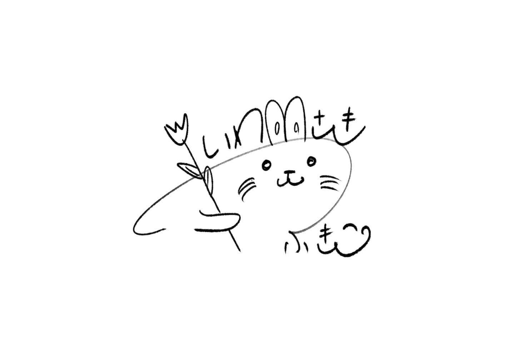
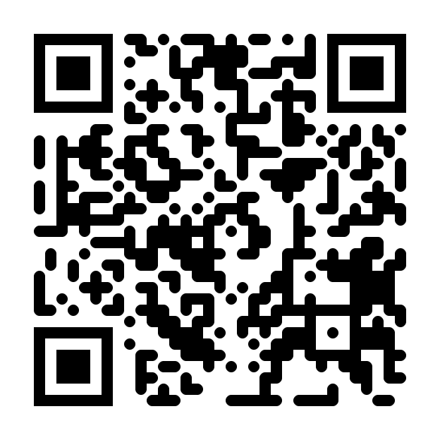

いわさきふきこ
ラジオパーソナリティ
テレビリポーター
司会者
ナレーター

プロフィール
1989年9月17日生まれ
海南市出身（和歌山市在住）
3児の母
和歌山を拠点に
イベント・式典・婚礼司会
ラジオパーソナリティ
テレビリポーターとして活動
行政・教育・スポーツ・地域イベントなど
「想いを届ける場」でのアナウンスを
数多く担当
経歴
2012年
紀の国わかやま国体・大会推進スタッフ
県内各所でPR活動
2014年〜
和歌山放送ラジオパーソナリティ就任
（初担当：落語家 桂枝曾丸氏）
2015年〜
フリーランス司会者として活動開始
（初担当:ピーター・バラカン Ping Pong DJ）
2016年〜
テレビ和歌山レギュラー番組出演
（初担当：漫画家 マエオカテツヤ氏）
出演実績
◇和歌山放送
◇テレビ和歌山
◇司会
◇ナレーション

Homepage